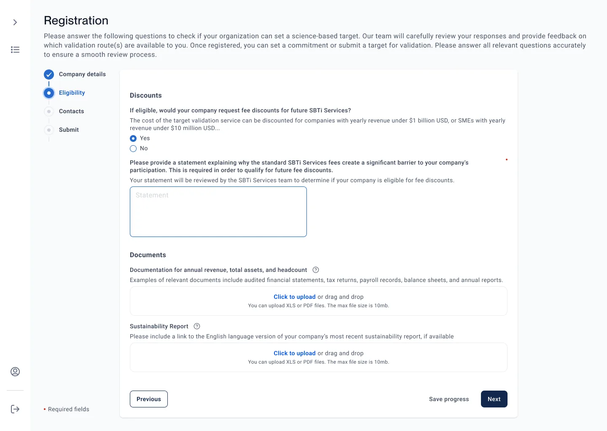

Simplifying climate target validation for global enterprises
I redesigned a 14-step compliance validation workflow into a 6-step guided flow for an enterprise platform used by sustainability teams at thousands of companies worldwide.
Work under NDA
Due to confidentiality, some interface details are simplified or omitted. I can discuss the process, decisions and collaboration model in more detail in an interview.
Context and business problem
Sustainability managers, analysts, and regulatory leads at large enterprises came to this platform to submit climate commitments, but the platform treated a multi-session, expert task as a single rigid form. Fourteen sequential steps, no progress saving, and requirements that only surfaced as errors meant most people gave up partway and rebuilt their progress in spreadsheets on the side.
My read going in: the data was not the problem, the workflow was. The job was to consolidate the steps that legacy process had accumulated, make progress legible, and let people leave and return without losing work, without weakening anything compliance actually required.


Actual product screens shown with permission. Full product under NDA.
30+ sessions with enterprise users
I ran moderated sessions with sustainability managers, analysts, and regulatory leads across energy, finance, manufacturing, and tech. There was no prior design work to build on, but the product was instrumented: the 67% abandon rate and the 4.5-hour median completion time came from product analytics and the recurring complaints in the support queue, which is what made the case for the rebuild concrete.
User interviews (n=16)
Users were not confused by the data itself, but by the system's inability to show where they were and what came next. Progress visibility was the #1 request.
Task analysis (n=8)
Observed real submissions. Most common workaround: spreadsheets maintained alongside the platform to track progress manually.
Stakeholder workshops
Facilitated assumption-testing workshops with product, engineering, and policy. The 30% engagement lift is a production analytics figure measured after launch, not an attribution to any single change.
Regulatory mapping
Worked with policy experts: 8 of 14 steps could be consolidated without compliance risk. Legal requirements vs. legacy artifacts.
The redesign was stalled before it was a design problem
The redesign had stalled on scope before I joined it, and the disagreement was between functions rather than between people: product, engineering and climate policy each held a different assumption about which of the fourteen steps were legally required. Nobody could concede ground because nobody could prove their assumption.
I ran the workshops as assumption testing rather than as prioritisation. Each step was put on the table as a claim to be checked against the regulation with the policy specialists in the room, which converted an argument about opinion into an audit against a document. That produced the number the whole project then hung on: 8 of the 14 steps were legacy artifacts, not legal requirements. Once that was on paper the scope argument ended, and three squads committed to the same six-step target.
The analytics did the other half of the work. A 67% abandon rate and a 4.5-hour median completion time, both already instrumented, made the case concrete enough that the rebuild stopped being a design preference and became a business problem.
The root cause, and the diagnosis I rejected
The obvious reading of a 67% abandon rate on a climate-data tool is that the data is too hard. The research did not support that. Users were not confused by the numbers they were being asked for; they were confused about where they were in a process and whether their work still existed. The spreadsheets people maintained alongside the platform were not shadow data, they were shadow progress tracking, which is the capability the product was missing.
That reframed the causal chain. A multi-session expert task had been built as a single rigid form, so requirements surfaced only as errors, there was nowhere to stop safely, and people left and rebuilt their state elsewhere. The failure was continuity and orientation, not comprehension. Everything after this followed from that one distinction, and the outcome supported it: progress indication, auto-save and explicit confirmations moved completion more than any change to the form fields themselves.
Symptom
67% abandon rate, 4.5-hour median completion, recurring support complaints.
The tempting diagnosis
The data model is too complex for the people submitting it. Simplify what is asked.
What research showed
Comprehension was fine. Orientation was not. Progress visibility was the single most requested thing across 16 interviews.
The actual cause
A multi-session task modelled as a one-shot form: no persistence, no position, late validation.
Three roles, one workflow
These are synthesised archetypes built from the research sessions, not individual participants. Each one summarises a role, what it owns, and what blocks it.
The 30 sessions clustered into three working roles, each with a different relationship to the submission. I designed for all three, which is the trade-off covered below.
The Submission Owner
Spends more time working around the tool than doing the analysis.
- Owns
- Getting the submission complete and on time
- Blocked by
- No progress saving, requirements that surface late
The Data Provider
Knows what data is required, but the system makes it hard to supply.
- Owns
- Document accuracy and scope coverage
- Blocked by
- Rigid input formats, no inline guidance
The Reviewer
Reviews dozens of submissions a quarter and needs status at a glance.
- Owns
- Batch review, audit trail, sign-off
- Blocked by
- No dashboard, manual status tracking
From 14 steps to 6
Step progress indicator
Persistent 6-step bar showing completion, current position, and estimated time. Users can jump between completed steps without losing data.
Auto-save + resume
Submissions auto-save every 30 seconds and resume exactly where the user left off. Eliminated the #1 complaint.
AI-powered scope analysis
Recommendation features surfacing guidance from unstructured documents. Users can trust, audit, and override AI outputs.
Inline validation
Replaced post-submission errors with inline guidance. Users see what is needed as they work, not after they submit.
Two directions I turned down
Rejected: design for one primary user
The 30 sessions clustered into three working roles with genuinely opposed needs. The submission owner wants to stop and resume, the analyst wants input guidance, the reviewer wants status at a glance. Optimising for the submission owner alone would have produced a cleaner flow and a faster build.
Why not: the reviewer is the reason a submission completes at all, and leaving them on manual status tracking would have moved the bottleneck rather than removed it. I designed for all three and accepted a wider surface.
Rejected: let the AI decide
The scope analysis could have filled the step directly instead of recommending. That version demos better and saves the user more time.
Why not: testing showed reviewers would not accept a recommendation they could not audit. Trust scored 3.8 out of 5, the lowest of the validated findings, and this is a submission a company answers for publicly. The AI recommends, shows its source, explains itself and can be overridden; the decision stays with the person accountable for it.
Both rejections cost something. Three roles meant more screens and a longer build. Recommendation over automation meant the most impressive version of the AI feature is the one that did not ship.
Outcomes
The left column is production analytics from the instrumented platform, comparing the quarter before launch with the quarter after. The right column is moderated usability testing with eight enterprise users on the redesigned flow. The two are not combined.
Production analytics, before and after
Moderated usability testing, n=8
What I learned about regulated workflows
Certainty mattered more than speed
These submissions carry regulatory and financial consequence, so users were unwilling to act without knowing where they were in the process and whether their work was saved. Progress indication, auto-save and explicit confirmations did more for completion than any change to the forms themselves.
Expert users rejected automated decisions
Testing showed reviewers would not accept a recommendation they could not audit. Trust scored 3.8 out of 5, the lowest of the validated findings. I designed the recommendation to show its source, explain its reasoning and offer an override, so the decision stayed with the person accountable for it.